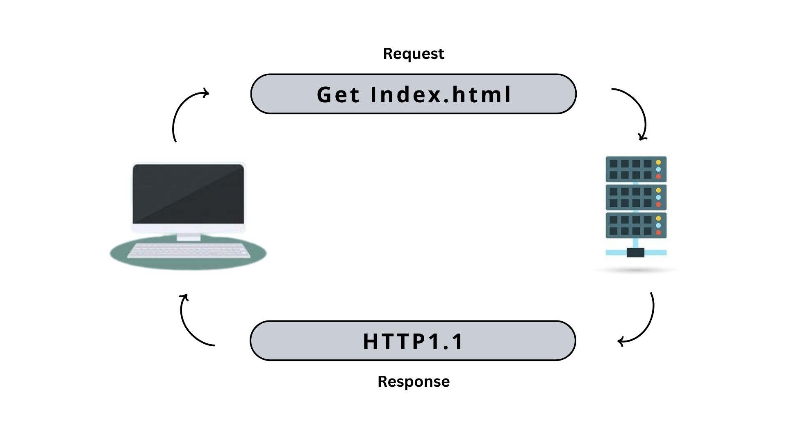
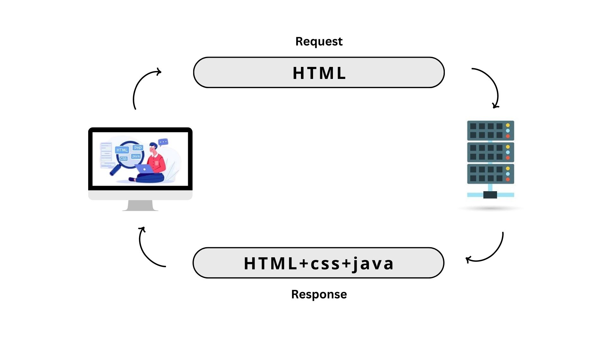

The Difference Between the Two Protocols HTTP1.1 vs HTTP2.0
HTTP1.1, the first standardized version of HTTP, was introduced in 1997. It presented significant performance optimizations (over HTTP/0.9 and HTTP/1.0) and transformed the way requests and responses were exchanged between clients and servers.
At the beginning of 2010, Google introduced an experimental protocol,which supported multiplexing (multiple requests/responses sent and received asynchronously over a single TCP connection)
| Differentiator | HTTP1.1 | HTTP2.0 |
|---|---|---|
| Year | 1997 | 2015 |
| Status Code | Introduces a warning header field to carry additional information about the status of a message. Can define 24 status codes, error reporting is quicker and more efficient. | Underlying semantics of HTTP such as headers, status codes remains the same. |
| Caching | Expands on the caching support by using additional headers like cache-control, conditional headers like If-Match and by using entity tags. | HTTP2.0 does not change much in terms of caching. With the server push feature if the client finds the resources are already present in the cache, it can cancel the pushed stream. |
| Web Traffic | HTTP1.1 provides faster delivery of web pages and reduces web traffic as compared to HTTP/1.0. | HTTP2.0 utilizes multiplexing and server push to effectively reduce the page load time by a greater margin along with being less sensitive to network delays. |